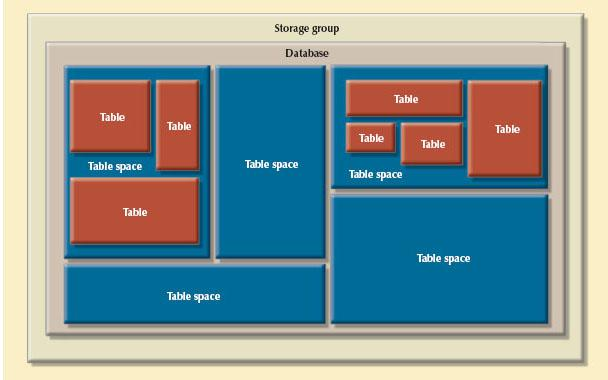
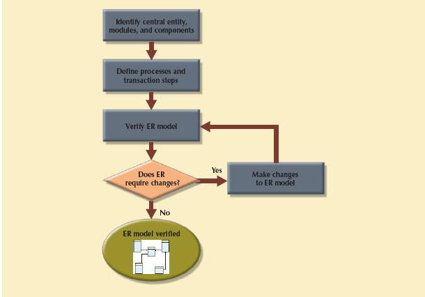

ONLINE CONTENT
ONLINE CONTENTDatabases are a part of a larger picture called an information system. Database designs that fail to recognize this fact are not likely to be successful. Database designers must recognize that the database is a critical means to an end rather than an end in itself. Managers want the database to serve their management needs, but too many databases seem to force managers to alter their routines to fit the database requirements.
Information systems don’t just happen; they are the product of a carefully staged development process. Systems analysis is used to determine the need for an information system and to establish its limits. Within systems analysis, the actual information system is created through a process known as systems development.
The creation and evolution of information systems follows an iterative pattern called the Systems Development Life Cycle (SDLC), which is a continuous process of creation, maintenance, enhancement, and replacement of the information system. A similar cycle applies to databases: the database is created, maintained, and enhanced. When enhancement can no longer stretch the database’s usefulness and it can no longer perform its functions adequately, it might have to be replaced. The Database Life Cycle (DBLC) is carefully traced in this chapter, and is shown in the context of the larger Systems Development Life Cycle.
At the end of the chapter, you will be introduced to some classical approaches to database design: top-down vs. bottom-up and centralized vs. decentralized.
Basically, a database is a carefully designed and constructed repository of facts. The database is part of a larger whole known as an information system, which provides for data collection, storage, and retrieval. The information system also helps transform data into information, and it allows for the management of both data and information. Thus, a complete information system is composed of people, hardware, software, the database(s), application programs, and procedures. Systems analysis is the process that establishes the need for an information system and its extent. The process of creating an information system is known as systems development.
One key characteristic of current information systems is the strategic value of information in the age of global business. Therefore, information systems should always be aligned with strategic business goals; the view of isolated and independent information systems is no longer valid. Current information systems should always be integrated with the company’s enterprise-wide information systems architecture.
NOTE
This chapter does not mean to cover all aspects of systems analysis and development, which are usually covered in a separate course or book. However, this chapter should help you better understand the issues associated with database design, implementation, and management, all of which are affected by the information system in which the database is a critical component.
Within the framework of systems development, applications transform data into the information that forms the basis for decision making. Applications usually generate formal reports, tabulations, and graphic displays designed to produce insight from the information. Figure 9.1 illustrates that every application is composed of two parts: the data and the code (program instructions) by which the data are transformed into information. The data and code work together to represent real-world business functions and activities. At any given moment, physically stored data represent a snapshot of the business, but the picture is not complete without an understanding of the business activities represented by the code.
FIGURE 9.1 Generating information for decision making
SOURCE: Course Technology/Cengage Learning
The performance of an information system depends on three factors:
• Database design and implementation
• Application design and implementation
• Administrative procedures
This book emphasizes the database design and implementation segment of the triad—arguably the most important of the three. However, failure to address the other two segments will likely yield a poorly functioning information system. Creating a sound information system is hard work: systems analysis and development require extensive planning to ensure that all of the activities will interface with each other, that they will complement each other, and that they will be completed on time.
In a broad sense, the term database development describes the process of database design and implementation. The primary objective in database design is to create complete, normalized, nonredundant (to the greatest extent possible), and fully integrated conceptual, logical, and physical database models. The implementation phase includes creating the database storage structure, loading data into the database, and providing for data management.
To make the procedures discussed in this chapter broadly applicable, the chapter focuses on the elements that are common to all information systems. Most of the processes and procedures described in this chapter do not depend on the size, type, or complexity of the database being implemented. However, the procedures that would be used to design a small database, such as one for a neighborhood shoe store, do not precisely scale up to the procedures that would be needed to design a database for a large corporation or even a segment of such a corporation. To use an analogy, building a small house requires a blueprint, just as building the Golden Gate Bridge did, but the bridge required far more complex planning, analysis, and design.
The next sections will trace the overall Systems Development Life Cycle and the related Database Life Cycle. Once you are familiar with those processes and procedures, you will learn about various approaches to database design, such as top-down vs. bottom-up and centralized vs. decentralized design.
NOTE
The Systems Development Life Cycle is a general framework through which you can track and understand the activities required to develop and maintain information systems. Within that framework, there are several ways to complete various tasks specified in the SDLC. For example, this book focuses on ER modeling and on relational database design and implementation, and that focus is maintained in this chapter. However, there are alternative methodologies:
• Unified Modeling Language (UML) provides object-oriented tools to support the tasks associated with the development of information systems. UML is covered in Appendix H, Unified Modeling Language (UML), at www.cengagebrain.com.
• Rapid Application Development (RAD)1 is an iterative software development methodology that uses prototypes, CASE tools, and flexible management to develop application systems. RAD started as an alternative to traditional structured development, which suffered from long deliverable times and unfulfilled requirements.
• Agile Software Development2 is a framework for developing software applications that divides the work into smaller subprojects to obtain valuable deliverables in shorter times and with better cohesion. This method emphasizes close communication among all users and continuous evaluation with the purpose of increasing customer satisfaction.
Although the development methodologies may change, the basic framework within which they are used does not change.
9.2 THE SYSTEMS DEVELOPMENT LIFE CYCLE
The Systems Development Life Cycle (SDLC) traces the history of an information system. Perhaps more important to the system designer, the SDLC provides the big picture within which the database design and application development can be mapped out and evaluated.
As illustrated in Figure 9.2, the traditional SDLC is divided into five phases: planning, analysis, detailed systems design, implementation, and maintenance. The SDLC is an iterative process rather than a sequential process. For example, the details of the feasibility study might help refine the initial assessment, and the details discovered during the user requirements portion of the SDLC might help refine the feasibility study.
FIGURE 9.2 The Systems Development Life Cycle
SOURCE: Course Technology/Cengage Learning
Because the Database Life Cycle fits into and resembles the SDLC, a brief description of the SDLC is in order.
The SDLC planning phase yields a general overview of the company and its objectives. An initial assessment of the information flow-and-extent requirements must be made during this discovery portion of the SDLC. Such an assessment should answer some important questions:
• Should the existing system be continued? If the information generator does its job well, there is no point in modifying or replacing it. To quote an old saying, “If it ain’t broke, don’t fix it.”
• Should the existing system be modified? If the initial assessment indicates deficiencies in the extent and flow of the information, minor (or even major) modifications might be needed. When considering modifications, the participants in the initial assessment must remember the distinction between wants and needs.
• Should the existing system be replaced? The initial assessment might indicate that the current system’s flaws are beyond fixing. Given the effort required to create a new system, a careful distinction between wants and needs is perhaps even more important in this case than it is when modifying the system.
Participants in the SDLC’s initial assessment must begin to study and evaluate alternative solutions. If a new system is necessary, the next question is whether it is feasible. The feasibility study must address the following:
• The technical aspects of hardware and software requirements. The decisions might not yet be vendor-specific, but they must address the nature of the hardware requirements (desktop computer, multiprocessor computer, mainframe, or supercomputer) and the software requirements (single- or multiuser operating systems, database type and software, programming languages to be used by the applications, and so on).
• The system cost. The admittedly mundane question “Can we afford it?” is crucial. The answer might force a careful review of the initial assessment. A million-dollar solution to a thousand-dollar problem is not defensible.
• The operational cost. Does the company possess the human, technical, and financial resources to keep the system operational? Should the feasibility study include the cost of management and end-user support needed to implement operational procedures to ensure the success of this system?
Problems defined during the planning phase are examined in greater detail during the analysis phase. A macro analysis must be made both of individual needs and organizational needs, addressing questions such as:
• What are the requirements of the current system’s end users?
• Do those requirements fit into the overall information requirements?
The analysis phase of the SDLC is, in effect, a thorough audit of user requirements.
The existing hardware and software systems are also studied during the analysis phase. The result of the analysis should be a better understanding of the system’s functional areas, actual and potential problems, and opportunities.
End users and the system designer(s) must work together to identify processes and uncover potential problem areas. Such cooperation is vital to defining the appropriate performance objectives by which the new system can be judged.
Along with a study of user requirements and the existing systems, the analysis phase also includes the creation of a logical systems design. The logical design must specify the appropriate conceptual data model, inputs, processes, and expected output requirements.
When creating a logical design, the designer might use tools such as data flow diagrams (DFDs), hierarchical input process output (HIPO) diagrams, and entity relationship (ER) diagrams. The database design’s data-modeling activities take place at this point to discover and describe all entities and their attributes, and the relationships among the entities within the database.
Defining the logical system also yields functional descriptions of the system’s components (modules) for each process within the database environment. All data transformations (processes) are described and documented, using systems analysis tools such as DFDs. The conceptual data model is validated against those processes.
In the detailed systems design phase, the designer completes the design of the system’s processes. The design includes all the necessary technical specifications for the screens, menus, reports, and other devices that might help make the system a more efficient information generator. The steps are laid out for conversion from the old system to the new system. Training principles and methodologies are also planned and must be submitted for management’s approval.
NOTE
Because this book has focused on the details of systems design, it has not explicitly recognized until now that management approval is needed at all stages of the process. Such approval is needed because a “go” decision requires funding. There are many go and “no go” decision points along the way to a completed systems design!
During the implementation phase, the hardware, DBMS software, and application programs are installed, and the database design is implemented. During the initial stages of the implementation phase, the system enters into a cycle of coding, testing, and debugging until it is ready to be delivered. The actual database is created, and the system is customized by the creation of tables and views, user authorizations, and so on.
The database contents might be loaded interactively or in batch mode, using a variety of methods and devices:
• Customized user programs
• Database interface programs
• Conversion programs that import the data from a different file structure, using batch programs, a database utility, or both
The system is subjected to exhaustive testing until it is ready for use. Traditionally, the implementation and testing of a new system took 50 to 60 percent of the total development time. However, the advent of sophisticated application generators and debugging tools has substantially decreased coding and testing time. After testing is concluded, the final documentation is reviewed and printed and end users are trained. The system is in full operation at the end of this phase, but it will be continuously evaluated and fine-tuned.
Almost as soon as the system is operational, end users begin to request changes in it. Those changes generate system maintenance activities, which can be grouped into three types:
• Corrective maintenance in response to systems errors
• Adaptive maintenance due to changes in the business environment
• Perfective maintenance to enhance the system
Because every request for structural change requires retracing the SDLC steps, the system is, in a sense, always at some stage of the SDLC.
Each system has a predetermined operational life span, but its actual life span depends on its perceived utility. There are several reasons for reducing the operational life of certain systems. Rapid technological change is one reason, especially for systems based on processing speed and expandability. Another common reason is the cost of maintaining a system.
If the system’s maintenance cost is high, its value becomes suspect. Computer-aided systems engineering (CASE) tools, such as System Architect or Visio Professional, help produce better systems within a reasonable amount of time and at a reasonable cost. In addition, CASE-produced applications are more structured, better documented, and especially standardized, which tends to prolong the operational life of systems by making them easier and cheaper to update and maintain.
Within the larger information system, the database is subject to a life cycle as well. The Database Life Cycle (DBLC) contains six phases, as shown in Figure 9.3: database initial study, database design, implementation and loading, testing and evaluation, operation, and maintenance and evolution.
FIGURE 9.3 The Database Life Cycle
SOURCE: Course Technology/Cengage Learning
9.3.1 THE DATABASE INITIAL STUDY
If a designer has been called in, chances are that the current system has failed to perform functions deemed vital by the company. (You don’t call the plumber unless the pipes leak.) Therefore, in addition to examining the current system’s operation within the company, the designer must determine how and why the current system fails. That means spending a lot of time talking and listening to end users. Although database design is a technical business, it is also people-oriented. Database designers must be excellent communicators and must have finely tuned interpersonal skills.
Depending on the complexity and scope of the database environment, the database designer might be a lone operator or part of a systems development team composed of a project leader, one or more senior systems analysts, and one or more junior systems analysts. The word designer is used generically here to cover a wide range of design team compositions.
The overall purpose of the database initial study is to:
• Analyze the company situation.
• Define problems and constraints.
• Define objectives.
• Define scope and boundaries.
Figure 9.4 depicts the interactive and iterative processes required to complete the first phase of the DBLC successfully. Note that the database initial study phase leads to the development of database system objectives. Using Figure 9.4 as a discussion template, examine each of its components in greater detail.
FIGURE 9.4 A summary of activities in the database initial study
SOURCE: Course Technology/Cengage Learning
Analyze the Company Situation
The company situation describes the general conditions in which a company operates, its organizational structure, and its mission. To analyze the company situation, the database designer must learn the company’s operational components, how they function, and how they interact.
The following issues must be resolved:
• What is the organization’s general operating environment, and what is its mission within that environment? The design must satisfy the operational demands created by the organization’s mission. For example, a mailorder business probably has operational requirements for its database that are quite different from those of a manufacturing business.
• What is the organization’s structure? Knowing who controls what and who reports to whom is quite useful when you need to define required information flows, specific report and query formats, and so on.
Define Problems and Constraints
The designer has both formal and informal sources of information. If the company has existed for any length of time, it already has a system in place (either manual or computer-based). How does the existing system function? What input does the system require? What documents does the system generate? By whom and how is the system output used? Studying the paper trail can be very informative. In addition to the official version of the system’s operation, there is also the more informal, perhaps more real version; the designer must be shrewd enough to see how these differ.
The process of defining problems might initially appear to be unstructured. Company end users often cannot precisely describe the larger scope of company operations or identify the real problems encountered during company operations. Often the managerial view of a company’s operation and its problems is different from that of the end users, who perform the actual routine work.
During the initial problem definition process, the designer is likely to collect very broad problem descriptions. For example, note the following concerns expressed by the president of a fast-growing, transnational manufacturing company:
Although the rapid growth is gratifying, members of the management team are concerned that such growth is beginning to undermine the ability to maintain a high customer service standard, and perhaps worse, to diminish manufacturing standards control.
The problem definition process quickly leads to a host of general problem descriptions. For example, the marketing manager comments:
I’m working with an antiquated filing system. We manufacture more than 1,700 specialty machine parts. When a regular customer calls in, we can’t get a very quick inventory scan. If a new customer calls in, we can’t do a current parts search by using a simple description, so we often do a machine setup for a part that we have in inventory. That’s wasteful. And of course, some new customers get irritated when we can’t give a quick response.
The production manager comments:
At best, it takes hours to generate the reports I need for scheduling purposes. I don’t have hours for quick turnarounds. It’s difficult to manage what I don’t have information about.
I don’t get quick product request routing. Take machine setup. Right now I’ve got operators either waiting for the right stock or getting it themselves when a new part is scheduled for production. I can’t afford to have an operator doing chores that a much lower-paid worker ought to be doing. There’s just too much waiting around with the current scheduling. I’m losing too much time, and my schedules back up. Our overtime bill is ridiculous.
I sometimes produce parts that are already in inventory because we don’t seem to be able to match what we’ve got in inventory with what we have scheduled. Shipping yells at me because I can’t turn out the parts, and often they’ve got them in inventory one bay down. That’s costing us big bucks sometimes.
New reports can take days or even weeks to get to my office. And I need a ton of reports to schedule personnel, downtime, training, etc. I can’t get new reports that I need NOW. What I need is the ability to get quick updates on percent defectives, percent rework, the effectiveness of training, you name it. I need such reports by shift, by date, by any characteristic I can think of to help me manage scheduling, training, you name it.
A machine operator comments:
It takes a long time to set my stuff up. If I get my schedule banged up because John doesn’t get the paperwork on time, I wind up looking for setup specs, startup material, bin assignments, and other stuff. Sometimes I spend two or three hours just setting up. Now you know why I can’t meet schedules. I try to be productive, but I’m spending too much time getting ready to do my job.
After the initial declarations, the database designer must continue to probe carefully to generate additional information that will help define the problems within the larger framework of company operations. How does the problem of the marketing manager’s customer fit within the broader set of marketing department activities? How does the solution to the customer’s problem help meet the objectives of the marketing department and the rest of the company? How do the marketing department’s activities relate to those of the other departments? That last question is especially important. Note that there are common threads in the problems described by the marketing and production department managers. If the inventory query process can be improved, both departments are likely to find simple solutions to at least some of their problems.
Finding precise answers is important, especially concerning the operational relationships among business units. If a proposed system will solve the marketing department’s problems but exacerbate those of the production department, not much progress will have been made. Using an analogy, suppose that your home water bill is too high. You have determined the problem: the faucets leak. The solution? You step outside and cut off the water supply to the house. However, is that an adequate solution, or would the replacement of faucet washers do a better job of solving the problem? You might find this scenario simplistic, yet almost any experienced database designer can find similar instances of database problem solving, although they are admittedly more complicated.
Even the most complete and accurate problem definition does not always lead to the perfect solution. The real world usually intrudes to limit the design of even the most elegant database by imposing constraints such as time, budget, and personnel. If you must have a solution within a month and within a $12,000 budget, you cannot take two years to develop a database at a cost of $100,000. The designer must learn to distinguish between what’s perfect and what’s possible.
Define Objectives
A proposed database system must be designed to help solve at least the major problems identified during the problem discovery process. As the list of problems unfolds, several common sources are likely to be discovered. In the previous example, both the marketing manager and the production manager seem to be plagued by inventory inefficiencies. If the designer can create a database that sets the stage for more efficient parts management, both departments gain. The initial objective, therefore, might be to create an efficient inventory query and management system.
NOTE
When trying to develop solutions, the database designer must look for the source of the problems. Many database systems have failed to satisfy the end users because they were designed to treat the symptoms of the problems rather than their source.
Note that the initial study phase also yields proposed problem solutions. The designer’s job is to make sure that his or her database system objectives correspond to those envisioned by the end user(s). In any case, the database designer must begin to address the following questions:
• What is the proposed system’s initial objective?
• Will the system interface with other existing or future systems in the company?
• Will the system share the data with other systems or users?
Define Scope and Boundaries
The designer must recognize two sets of limits: scope and boundaries. The system’s scope defines the extent of the design according to operational requirements. Will the database design encompass the entire organization, one or more departments within the organization, or one or more functions of a single department? The designer must know the “size of the ballpark.” Knowing the scope helps define the required data structures, the type and number of entities, the physical size of the database, and so on.
The proposed system is also subject to limits known as boundaries, which are external to the system. Has any designer ever been told, “We have all the time in the world” or “Use an unlimited budget and as many people as needed to make the design come together”? Boundaries are also imposed by existing hardware and software. Ideally, the designer can choose the hardware and software that will best accomplish the system goals. In fact, software selection is an important aspect of the Systems Development Life Cycle. Unfortunately, in the real world, a system must often be designed around existing hardware. Thus, the scope and boundaries become the factors that force the design into a specific mold, and the designer’s job is to design the best system possible within those constraints. (Note that problem definitions and the objectives must sometimes be reshaped to meet the system scope and boundaries.)
The second phase of the DBLC focuses on the design of the database model that will support company operations and objectives. This is arguably the most critical DBLC phase: making sure that the final product meets user and system requirements. In the process of database design, you must concentrate on the data characteristics required to build the database model. At this point, there are two views of the data within the system: the business view of data as a source of information and the designer’s view of the data structure, its access, and the activities required to transform the data into information. Figure 9.5 contrasts those views. Note that you can summarize the different views by looking at the terms what and how. Defining data is an integral part of the DBLC’s second phase.
As you examine the procedures required to complete the design phase in the DBLC, remember these points:
• The process of database design is loosely related to the analysis and design of a larger system. The data component is only one element of a larger information system.
• The systems analysts or systems programmers are in charge of designing the other system components. Their activities create the procedures that will help transform the data within the database into useful information.
• The database design does not constitute a sequential process. Rather, it is an iterative process that provides continuous feedback designed to trace previous steps.
FIGURE 9.5 Two views of data: business manager and database designer
SOURCE: Course Technology/Cengage Learning
The database design process is depicted in Figure 9.6. The figure shows that there are three essential stages: conceptual, logical, and physical design, plus the DBMS selection decision, which is critical to determine the type of logical and physical designs to be created. The design process starts with conceptual design and moves to the logical and physical design stages. At each stage, more details about the data model design are determined and documented. You could think of the conceptual design as the overall data as seen by the end user, the logical design as the data as seen by the DBMS, and the physical design as the data as seen by the operating system’s storage management devices.
It is important to note that the overwhelming majority of database designs and implementations are based on the relational model, and therefore use the relational model constructs and techniques. When you finish the design activities, you will have a complete database design ready to be implemented.
Database design activities are covered in detail in Sections 9.4 (Conceptual Design), 9.5 (DBMS Software Selection), 9.6 (Logical Design), and 9.7 (Physical Design).
FIGURE 9.6 Database design process
SOURCE: Course Technology/Cengage Learning
* See Chapter 12, Distributed Database Management Systems
+ See Chapter 11, Database Performance Tuning and Query Optimization
ONLINE CONTENT
Two appendixes at www.cengagebrain.com provide a concise example of simple real-world database development: Appendix B, The University Lab: Conceptual Design, and Appendix C, The University Lab: Conceptual Design Verification, Logical Design, and Implementation.
9.3.3 IMPLEMENTATION AND LOADING
The output of the database design phase is a series of instructions detailing the creation of tables, attributes, domains, views, indexes, security constraints, and storage and performance guidelines. In this phase, you actually implement all these design specifications.
Install the DBMS
This step is required only when a new dedicated instance of the DBMS is necessary for the system. In many cases, the organization will have made a particular DBMS the standard to leverage investments in the technology and the skills that employees have already developed. The DBMS may be installed on a new server or on existing servers. One current trend is called virtualization. Virtualization is a technique that creates logical representations of computing resources that are independent of the underlying physical computing resources. This technique is used in many areas of computing, such as the creation of virtual servers, virtual storage, and virtual private networks. In a database environment, database virtualization refers to the installation of a new instance of the DBMS on a virtual server running on shared hardware. This is normally a task that involves system and network administrators to create appropriate user groups and services in the server configuration and network routing.
Create the Database(s)
In most modern relational DBMSs, a new database implementation requires the creation of special storage-related constructs to house the end-user tables. The constructs usually include the storage group (or file groups), the table spaces, and the tables. Figure 9.7 shows that a storage group can contain more than one table space and that a table space can contain more than one table.
FIGURE 9.7 Physical organization of a DB2 database environment

SOURCE: Course Technology/Cengage Learning
For example, the implementation of the logical design in IBM’s DB2 would require the following:
1. The system administrator (SYSADM) would create the database storage group. This step is mandatory for such mainframe databases as DB2. Other DBMS software may create equivalent storage groups automatically when a database is created. (See Step 2.) Consult your DBMS documentation to see if you must create a storage group, and if so, what the command syntax must be.
2. The SYSADM creates the database within the storage group.
3. The SYSADM assigns the rights to use the database to a database administrator (DBA).
4. The DBA creates the table space(s) within the database.
5. The DBA creates the table(s) within the table space(s).
6. The DBA assigns access rights to the table spaces and to the tables within specified table spaces. Access rights may be limited to views rather than to whole tables. The creation of views is not required for database access in the relational environment, but views are desirable from a security standpoint. For example, using the following command, access rights to a table named PROFESSOR may be granted to the user Shannon Scott, whose identification code is SSCOTT:
GRANT SELECT ON PROFESSOR TO USER SSCOTT;
Load or Convert the Data
After the database has been created, the data must be loaded into the database tables. Typically, the data will have to be migrated from the prior version of the system. Often, data to be included in the system must be aggregated from multiple sources. In a best-case scenario, all of the data will be in a relational database so that it can be readily transferred to the new database. However, in some cases data may have to be imported from other relational databases, nonrelational databases, flat files, legacy systems, or even manual paper-and-pencil systems. If the data format does not support direct importing into the new database, conversion programs may have to be created to reformat the data for importing. In a worst-case scenario, much of the data may have to be manually entered into the database. Once the data have been loaded, the DBA works with the application developers to test and evaluate the database.
In the design phase, decisions were made to ensure integrity, security, performance, and recoverability of the database. During implementation and loading, these plans were put into place. In testing and evaluation, the DBA tests and fine-tunes the database to ensure that it performs as expected. This phase occurs in conjunction with application programming. Programmers use database tools to prototype the applications during coding of the programs. Tools such as report generators, screen painters, and menu generators are especially useful to application programmers.
Test the Database
During this step, the DBA tests the database to ensure that it maintains the integrity and security of the data. Data integrity is enforced by the DBMS through the proper use of primary and foreign key rules. Many DBMSs also support the creation of domain constraints and database triggers. Testing will ensure that these constraints were properly designed and implemented. Data integrity is also the result of properly implemented data management policies, which are part of a comprehensive data administration framework. For a more detailed study of this topic, see The DBA’s Managerial Role section in Chapter 15, Database Administration and Security.
Previously, users and roles were created to grant users access to the data. In this stage, not only must those privileges be tested, the broader view of data privacy and security must be addressed. Data stored in the company database must be protected from access by unauthorized users. (It does not take much imagination to predict the likely results if students have access to a student database or if employees have access to payroll data!) Consequently, you must test for at least the following:
• Physical security allows only authorized personnel physical access to specific areas. Depending on the type of database implementation, however, establishing physical security might not always be practical. For example, a university student research database is not a likely candidate for physical security.
• Password security allows the assignment of access rights to specific authorized users. Password security is usually enforced at login time at the operating system level.
• Access rights can be established through the use of database software. The assignment of access rights may restrict operations (CREATE, UPDATE, DELETE, and so on) on predetermined objects such as databases, tables, views, queries, and reports.
• Audit trails are usually provided by the DBMS to check for access violations. Although the audit trail is an after-the-fact device, its mere existence can discourage unauthorized use.
• Data encryption can render data useless to unauthorized users who might have violated some of the database security layers.
• Diskless workstations allow end users to access the database without being able to download the information from their workstations.
For a more detailed discussion of security issues, refer to Chapter 15, Database Administration and Security.
Fine-Tune the Database
Database performance can be difficult to evaluate because there are no standards for measuring it, but it is typically one of the most important factors in database implementation. Different systems will place different performance requirements on the database. Systems that support rapid transactions will require the database to be implemented so that they provide superior performance during high volumes of inserts, updates, and deletes. Other systems, like decision support systems, may require superior performance for complex data retrieval tasks. Many factors can affect the database’s performance on various tasks, including the hardware and software environment in which the database exists. Naturally, the characteristics and volume of the data also affect database performance: a search of 10 tuples is faster than a search of 100,000 tuples. Other important factors in database performance include system and database configuration parameters such as data placement, access path definition, the use of indexes, and buffer size. For a more in-depth discussion of database performance issues, see Chapter 11, Database Performance Tuning and Query Optimization.
Evaluate the Database and Its Application Programs
As the database and application programs are created and tested, the system must also be evaluated using a more holistic approach. Testing and evaluation of the individual components should culminate in a variety of broader system tests to ensure that all of the components interact properly to meet the needs of the users. At this stage, integration issues and deployment plans are refined, user training is conducted, and system documentation is finalized. Once the system receives final approval, it must be a sustainable resource for the organization. To ensure that the data contained in the database are protected against loss, backup and recovery plans are tested.
Timely data availability is crucial for almost every database. Unfortunately, the database can lose data through unintended deletions, power outages, and other causes. Data backup and recovery procedures create a safety valve, ensuring the availability of consistent data. Typically, database vendors encourage the use of fault-tolerant components such as uninterruptible power supply (UPS) units, RAID storage devices, clustered servers, and data replication technologies to ensure the continuous operation of the database in case of a hardware failure. Even with these components, backup and restore functions constitute a very important part of daily database operations. Some DBMSs provide functions that allow the database administrator to schedule automatic database backups to permanent storage devices such as disks, DVDs, tapes, and online storage. Database backups can be performed at different levels:
• A full backup, or dump, of the entire database. In this case, all database objects are backed up in their entirety.
• A differential backup of the database, in which only the objects that have been updated or modified since the last full backup are backed up.
• A transaction log backup, which backs up only the transaction log operations that are not reflected in a previous backup copy of the database. In this case, no other database objects are backed up. (For a complete explanation of the transaction log, see Chapter 10, Transaction Management and Concurrency Control.)
The database backup is stored in a secure place, usually in a different building from the database itself, and is protected against dangers such as fire, theft, flood, and other potential calamities. The main purpose of the backup is to guarantee database restoration following a hardware or software failure.
Failures that plague databases and systems are generally induced by software, hardware, programming exemptions, transactions, or external factors. Table 9.1 summarizes the most common sources of database failure.
TABLE 9.1 Common Sources of Database Failure
SOURCE |
DESCRIPTION |
EXAMPLE |
Software |
Software-induced failures may be traceable to the operating system, the DBMS software, application programs, or viruses. | The SQL Slammer worm affected many unpatched MS SQL Server systems in 2003, causing millions of dollars in damages. |
Hardware | Hardware-induced failures may include memory chip errors, disk crashes, bad disk sectors, and disk-full errors. | A bad memory module or a multiple hard disk failure in a database system can bring it to an abrupt stop. |
Programming exemptions | Application programs or end users may roll back transactions when certain conditions are defined. Programming exemptions can also be caused by malicious or improperly tested code that can be exploited by hackers. | Hackers constantly search for ways to exploit unprotected Web database systems. |
Transactions | The system detects deadlocks and aborts one of the transactions. (See Chapter 10.) | Deadlock occurs when executing multiple simultaneous transactions. |
External factors | Backups are especially important when a system suffers complete destruction from fire, earthquake, flood, or other natural disaster. | In 2005, Hurricane Katrina in New Orleans caused data losses worth millions of dollars. |
Depending on the type and extent of the failure, the recovery process ranges from a minor short-term inconvenience to a major long-term rebuild. Regardless of the extent of the required recovery process, recovery is not possible without a usable backup.
Database recovery generally follows a predictable scenario. First, the type and extent of the required recovery are determined. If the entire database needs to be recovered to a consistent state, the recovery uses the most recent backup copy of the database in a known consistent state. The backup copy is then rolled forward to restore all subsequent transactions by using the transaction log information. If the database needs to be recovered but the committed portion of the database is still usable, the recovery process uses the transaction log to “undo” all of the transactions that were not committed (see Chapter 10, Transaction Management and Concurrency Control).
At the end of this phase, the database completes an iterative process of testing, evaluation, and modification that continues until the system is certified as ready to enter the operational phase.
Once the database has passed the evaluation stage, it is considered operational. At that point, the database, its management, its users, and its application programs constitute a complete information system.
The beginning of the operational phase invariably starts the process of system evolution. As soon as all of the targeted end users have entered the operations phase, problems that could not have been foreseen during the testing phase begin to surface. Some of the problems are serious enough to warrant emergency “patchwork,” while others are merely minor annoyances. For example, if the database design is implemented to interface with the Web, the sheer volume of transactions might cause even a well-designed system to bog down. In that case, the designers have to identify the source of the bottleneck and produce alternative solutions. Those solutions may include using load-balancing software to distribute the transactions among multiple computers, increasing the available cache for the DBMS, and so on. The demand for change is the designer’s constant concern, which leads to phase 6, maintenance and evolution.
9.3.6 MAINTENANCE AND EVOLUTION
The database administrator must be prepared to perform routine maintenance activities within the database. Some of the required periodic maintenance activities include:
• Preventive maintenance (backup)
• Corrective maintenance (recovery)
• Adaptive maintenance (enhancing performance, adding entities and attributes, and so on)
• Assignment of access permissions and their maintenance for new and old users
• Generation of database access statistics to improve the efficiency and usefulness of system audits and to monitor system performance
• Periodic security audits based on the system-generated statistics
• Monthly, quarterly, or yearly system usage summaries for internal billing or budgeting purposes
The likelihood of new information requirements and the demand for additional reports and new query formats require application changes and possible minor changes in the database components and contents. These changes can be easily implemented only when the database design is flexible and when all documentation is updated and online. Eventually, even the best-designed database environment will no longer be capable of incorporating such evolutionary changes, and then the whole DBLC process begins anew.
As you can see, many of the activities described in the DBLC are similar to those in the SDLC. This should not be surprising, because the SDLC is the framework within which the DBLC activities take place. A summary of the parallel activities that occur within the SDLC and DBLC is shown in Figure 9.8.
FIGURE 9.8 Parallel activities in the DBLC and the SDLC
SOURCE: Course Technology/Cengage Learning
Recall that the second phase of the DBLC is database design, which comprises three stages: conceptual design, logical design, and physical design, plus the critical decision of DBMS selection. Conceptual design is the first stage in the database design process. The goal at this stage is to design a database that is independent of database software and physical details. The output of this process is a conceptual data model that describes the main data entities, attributes, relationships, and constraints of a given problem domain. This design is descriptive and narrative in form. In other words, it is generally composed of a graphical representation as well as textual descriptions of the main data elements, relationships, and constraints.
In this stage, data modeling is used to create an abstract database structure that represents real-world objects in the most realistic way possible. The conceptual model must embody a clear understanding of the business and its functional areas. At this level of abstraction, the type of hardware and database model to be used might not have been identified yet. Therefore, the design must be software- and hardware-independent so that the system can be set up within any platform chosen later.
Keep in mind the following minimal data rule:
All that is needed is there, and all that is there is needed.
In other words, make sure that all data needed are in the model and that all data in the model are needed. All data elements required by the database transactions must be defined in the model, and all data elements defined in the model must be used by at least one database transaction.
However, as you apply the minimal data rule, avoid excessive short-term bias. Focus not only on the immediate data needs of the business but on future data needs. Thus, the database design must leave room for future modifications and additions, ensuring that the business’s investment in information resources will endure.
The conceptual design has four steps, which are listed in Table 9.2.
TABLE 9.2 Conceptual Design Steps
STEP | ACTIVITY |
1 | Data analysis and requirements |
2 | Entity relationship modeling and normalization |
3 | Data model verification |
4 | Distributed database design |
The following sections cover these steps in more detail.
9.4.1 DATA ANALYSIS AND REQUIREMENTS
The first step in conceptual design is to discover the characteristics of the data elements. An effective database is an information factory that produces key ingredients for successful decision making. Appropriate data element characteristics are those that can be transformed into appropriate information. Therefore, the designer’s efforts are focused on:
• Information needs. What kind of information is needed? That is, what output (reports and queries) must be generated by the system, what information does the current system generate, and to what extent is that information adequate?
• Information users. Who will use the information? How is the information to be used? What are the various end-user data views?
• Information sources. Where is the information to be found? How is the information to be extracted once it is found?
• Information constitution. What data elements are needed to produce the information? What are the data attributes? What relationships exist among the data? What is the data volume? How frequently are the data used? What data transformations will be used to generate the required information?
The designer obtains the answers to those questions from a variety of sources to compile the necessary information:
• Developing and gathering end-user data views. The database designer and the end user(s) jointly develop a precise description of end-user data views, which in turn are used to help identify the database’s main data elements.
• Directly observing the current system: existing and desired output. The end user usually has an existing system in place, whether it is manual or computer-based. The designer reviews the existing system to identify the data and their characteristics. The designer examines the input forms and files (tables) to discover the data type and volume. If the end user already has an automated system in place, the designer carefully examines the current and desired reports to describe the data required to support the reports.
• Interfacing with the systems design group. As noted earlier in this chapter, the database design process is part of the SDLC. In some cases, the systems analyst in charge of designing the new system will also develop the conceptual database model. (This is usually true in a decentralized environment.) In other cases, the database design is considered part of the DBA’s job. The presence of a DBA usually implies the existence of a formal data-processing department. The DBA designs the database according to the specifications created by the systems analyst.
To develop an accurate data model, the designer must have a thorough understanding of the company’s data types and their extent and uses. But data do not, by themselves, yield the required understanding of the total business. From a database point of view, the collection of data becomes meaningful only when business rules are defined. Remember from Chapter 2, Data Models, that a business rule is a brief and precise description of a policy, procedure, or principle within a specific organization’s environment. Business rules, derived from a detailed description of an organization’s operations, help to create and enforce actions within that organization’s environment. When business rules are written properly, they define entities, attributes, relationships, connectivities, cardinalities, and constraints.
To be effective, business rules must be easy to understand and they must be widely disseminated to ensure that every person in the organization shares a common interpretation of the rules. Using simple language, business rules describe the main and distinguishing characteristics of the data as viewed by the company. Examples of business rules are as follows:
• A customer may make many payments on an account.
• Each payment on an account is credited to only one customer.
• A customer may generate many invoices.
• Each invoice is generated by only one customer.
Given their critical role in database design, business rules must not be established casually. Poorly defined or inaccurate business rules lead to database designs and implementations that fail to meet the needs of the organization’s end users.
Ideally, business rules are derived from a formal description of operations, which is a document that provides a precise, up-to-date, and thoroughly reviewed description of the activities that define an organization’s operating environment. (To the database designer, the operating environment is both the data sources and the data users.) Naturally, an organization’s operating environment is dependent on the organization’s mission. For example, the operating environment of a university would be quite different from that of a steel manufacturer, an airline, or a nursing home. Yet, no matter how different the organizations may be, the data analysis and requirements component of the database design is enhanced when the data environment and data use are described accurately and precisely within a description of operations.
In a business environment, the main sources of information for the description of operations—and therefore of business rules—are company managers, policy makers, department managers, and written documentation such as company procedures, standards, and operations manuals. A faster and more direct source of business rules is direct interviews with end users. Unfortunately, because perceptions differ, the end user can be a less reliable source when it comes to specifying business rules. For example, a maintenance department mechanic might believe that any mechanic can initiate a maintenance procedure, when actually only mechanics with inspection authorization should perform such a task. This distinction might seem trivial, but it has major legal consequences. Although end users are crucial contributors to the development of business rules, it pays to verify end-user perceptions. Often, interviews with several people who perform the same job yield very different perceptions of their job components. While such a discovery might point to “management problems,” that general diagnosis does not help the database designer. Given the discovery of such problems, the database designer’s job is to reconcile the differences and verify the results of the reconciliation to ensure that the business rules are appropriate and accurate.
Knowing the business rules enables the designer to fully understand how the business works and what role the data play within company operations. Consequently, the designer must identify the company’s business rules and analyze their impact on the nature, role, and scope of data.
Business rules yield several important benefits in the design of new systems:
• They help standardize the company’s view of data.
• They constitute a communications tool between users and designers.
• They allow the designer to understand the nature, role, and scope of the data.
• They allow the designer to understand business processes.
• They allow the designer to develop appropriate relationship participation rules and foreign key constraints. See Chapter 4, Entity Relationship (ER) Modeling.
The last point is especially noteworthy: whether a given relationship is mandatory or optional is usually a function of the applicable business rule.
9.4.2 ENTITY RELATIONSHIP MODELING AND NORMALIZATION
Before creating the ER model, the designer must communicate and enforce appropriate standards to be used in the documentation of the design. The standards include the use of diagrams and symbols, documentation writing style, layout, and any other conventions to be followed during documentation. Designers often overlook this very important requirement, especially when they are working as members of a design team. Failure to standardize documentation often means a failure to communicate later, and communications failures often lead to poor design work. In contrast, well-defined and enforced standards make design work easier and promise (but do not guarantee) a smooth integration of all system components.
Because the business rules usually define the nature of the relationship(s) among the entities, the designer must incorporate them into the conceptual model. The process of defining business rules and developing the conceptual model using ER diagrams can be described using the steps shown in Table 9.3.3
TABLE 9.3 Developing the Conceptual Model Using ER Diagrams
STEP | ACTIVITY |
1 | Identify, analyze, and refine the business rules. |
2 | Identify the main entities, using the results of Step 1. |
3 | Define the relationships among the entities, using the results of Steps 1 and 2. |
4 | Define the attributes, primary keys, and foreign keys for each of the entities. |
5 | Normalize the entities. (Remember that entities are implemented as tables in an RDBMS.) |
6 | Complete the initial ER diagram. |
7 | Validate the ER model against the end users’ information and processing requirements. |
8 | Modify the ER model, using the results of Step 7. |
Some of the steps listed in Table 9.3 take place concurrently, and some, such as the normalization process, can generate a demand for additional entities and/or attributes, thereby causing the designer to revise the ER model. For example, while identifying two main entities, the designer might also identify the composite bridge entity that represents the many-to-many relationship between the two main entities.
To review, suppose that you are creating a conceptual model for the JollyGood Movie Rental Corporation, whose end users want to track customers’ movie rentals. The simple ER diagram presented in Figure 9.9 shows a composite entity that helps track customers and their video rentals. Business rules define the optional nature of the relationships between the entities VIDEO and CUSTOMER. For example, customers are not required to check out a video. A video need not be checked out in order to exist on the shelf. A customer may rent many videos, and a video may be rented by many customers. In particular, note the composite RENTAL entity that connects the two main entities.
FIGURE 9.9 JollyGood movie rental ERD
SOURCE: Course Technology/Cengage Learning
As you will likely discover, the initial ER model may be subjected to several revisions before it meets the system’s requirements. Such a revision process is quite natural. Remember that the ER model is a communications tool as well as a design blueprint. Therefore, when you meet with the proposed system users, the initial ER model should give rise to questions such as, “Is this really what you meant?” For example, the ERD shown in Figure 9.9 is far from complete. Clearly, many more attributes must be defined and the dependencies must be checked before the design can be implemented. In addition, the design cannot yet support typical video rental transactions. For example, each video is likely to have many copies available for rental purposes. However, if the VIDEO entity shown in Figure 9.9 is used to store the titles as well as the copies, the design triggers the data redundancies shown in Table 9.4.
TABLE 9.4 Data Redundancies in the VIDEO Table
The initial ERD shown in Figure 9.9 must be modified to reflect the answer to the question, “Is more than one copy available for each title?” Also, payment transactions must be supported. (You will have an opportunity to modify this initial design in Problem 5 at the end of the chapter.)
From the preceding discussion, you might get the impression that ER modeling activities such as entity and attribute definition, normalization, and verification take place in a precise sequence. In fact, once you have completed the initial ER model, chances are that you will move back and forth among the activities until you are satisfied that the ER model accurately represents a database design that can meet the required system demands. The activities often take place in parallel, and the process is iterative. Figure 9.10 summarizes the ER modeling interactions. Figure 9.11 summarizes the array of design tools and information sources that the designer can use to produce the conceptual model.
FIGURE 9.10 ER modeling is an iterative process based on many activities
SOURCE: Course Technology/Cengage Learning
FIGURE 9.11 Conceptual design tools and information sources
SOURCE: Course Technology/Cengage Learning
* Output generated by the systems analysis and design activities
All objects (entities, attributes, relations, views, and so on) are defined in a data dictionary, which is used in tandem with the normalization process to help eliminate data anomalies and redundancy problems. During this ER modeling process, the designer must:
• Define entities, attributes, primary keys, and foreign keys. (The foreign keys serve as the basis for the relationships among the entities.)
• Make decisions about adding new primary key attributes to satisfy end-user and processing requirements.
• Make decisions about the treatment of composite and multivalued attributes.
• Make decisions about adding derived attributes to satisfy processing requirements.
• Make decisions about the placement of foreign keys in 1:1 relationships.
• Avoid unnecessary ternary relationships.
• Draw the corresponding ER diagram.
• Normalize the entities.
• Include all data element definitions in the data dictionary.
• Make decisions about standard naming conventions.
The naming conventions requirement is important, yet it is frequently ignored at the designer’s risk. Real database design is generally accomplished by teams. Therefore, it is important to ensure that team members work in an environment in which naming standards are defined and enforced. Proper documentation is crucial to the successful completion of the design, and adherence to the naming conventions serves database designers well. In fact, a common refrain from users seems to be: “I didn’t know why you made such a fuss over naming conventions, but now that I’m doing this stuff for real, I’ve become a true believer.”
Data model verification is one of the last steps in the conceptual design stage, and it is one of the most critical. In this step, the ER model must be verified against the proposed system processes to corroborate that they can be supported by the database model. Verification requires that the model be run through a series of tests against:
• End-user data views
• All required transactions: SELECT, INSERT, UPDATE, and DELETE operations
• Access rights and security
• Business-imposed data requirements and constraints
Because real-world database design is generally done by teams, the database design is probably divided into major components known as modules. A module is an information system component that handles a specific business function, such as inventory, orders, or payroll. Under these conditions, each module is supported by an ER segment that is a subset or fragment of an enterprise ER model. Working with modules accomplishes several important ends:
• The modules (and even the segments within them) can be delegated to design groups within teams, greatly speeding up the development work.
• The modules simplify the design work. The large number of entities within a complex design can be daunting. Each module contains a more manageable number of entities.
• The modules can be prototyped quickly. Implementation and application programming trouble spots can be identified more readily. Quick prototyping is also a great confidence builder.
• Even if the entire system cannot be brought online quickly, the implementation of one or more modules will demonstrate that progress is being made and that at least part of the system is ready to begin serving the end users.
As useful as modules are, they represent a loose collection of ER model fragments that could wreak havoc in the database if left unchecked. For example, the ER model fragments:
• Might present overlapping, duplicated, or conflicting views of the same data
• Might not be able to support all processes in the system’s modules
To avoid these problems, it is better if the modules’ ER fragments are merged into a single enterprise ER model. This process starts by selecting a central ER model segment and iteratively adding more ER model segments one at a time. At each stage, for each new entity added to the model, you need to validate that the new entity does not overlap or conflict with a previously identified entity in the enterprise ER model.
Merging the ER model segments into an enterprise ER model triggers a careful reevaluation of the entities, followed by a detailed examination of the attributes that describe those entities. This process serves several important purposes:
• The emergence of the attribute details might lead to a revision of the entities themselves. Perhaps some of the components first believed to be entities will instead turn out to be attributes within other entities. Or, a component that was originally considered an attribute might turn out to contain a sufficient number of subcomponents to warrant the introduction of one or more new entities.
• The focus on attribute details can provide clues about the nature of relationships as they are defined by the primary and foreign keys. Improperly defined relationships lead to implementation problems first and to application development problems later.
• To satisfy processing and end-user requirements, it might be useful to create a new primary key to replace an existing primary key. For example, in the example illustrated in Figure 9.9, a surrogate primary key (RENTAL_ID) could be introduced to replace the original primary key composed of VIDEO_ID and CUST_NUM.
• Unless the entity details (the attributes and their characteristics) are precisely defined, it is difficult to evaluate the extent of the design’s normalization. Knowledge of the normalization levels helps guard against undesirable redundancies.
• A careful review of the rough database design blueprint is likely to lead to revisions. Those revisions will help ensure that the design is capable of meeting end-user requirements.
After finishing the merging process, the resulting enterprise ER model is verified against each of the module’s processes. The ER model verification process is detailed in Table 9.5.
TABLE 9.5 The ER Model Verification Process
STEP | ACTIVITY |
1 | Identify the ER model’s central entity. |
2 | Identify each module and its components. |
3 | Identify each module’s transaction requirements: |
4 | Verify all processes against system requirements. |
5 | Make all necessary changes suggested in Step 4. |
6 | Repeat Steps 2-5 for all modules. |
Keep in mind that this process requires the continuous verification of business transactions as well as system and user requirements. The verification sequence must be repeated for each of the system’s modules. Figure 9.12 illustrates the iterative nature of the process.
FIGURE 9.12 Iterative ER model verification process

SOURCE: Course Technology/Cengage Learning
The verification process starts with selecting the central (most important) entity, which is the focus for most of the system’s operations. To identify the central entity, the designer selects the entity involved in the greatest number of the model’s relationships. In the ER diagram, it is the entity with more lines connected to it than any other.
The next step is to identify the module or subsystem to which the central entity belongs and to define that module’s boundaries and scope. The entity belongs to the module that uses it most frequently. Once each module is identified, the central entity is placed within the module’s framework to let you focus on the module’s details.
Within the central entity/module framework, you must:
• Ensure the module’s cohesivity. The term cohesivity describes the strength of the relationships found among the module’s entities. A module must display high cohesivity—that is, the entities must be strongly related, and the module must be complete and self-sufficient.
• Analyze each module’s relationships with other modules to address module coupling. Module coupling describes the extent to which modules are independent of one another. Modules must display low coupling, indicating that they are independent of other modules. Low coupling decreases unnecessary intermodule dependencies, thereby allowing the creation of a truly modular system and eliminating unnecessary relationships among entities.
Processes may be classified according to their:
• Frequency (daily, weekly, monthly, yearly, or exceptions)
• Operational type (INSERT or ADD, UPDATE or CHANGE, DELETE, queries and reports, batches, maintenance, and backups)
All identified processes must be verified against the ER model. If necessary, appropriate changes are implemented. The process verification is repeated for all of the model’s modules. You can expect that additional entities and attributes will be incorporated into the conceptual model during its validation.
At this point, a conceptual model has been defined as hardware- and software-independent. Such independence ensures the system’s portability across platforms. Portability can extend the database’s life by making it possible to migrate to another DBMS and hardware platform.
9.4.4 DISTRIBUTED DATABASE DESIGN
Although not a requirement for most databases, some may need to be distributed among multiple geographical locations. Processes that access the database may also vary from one location to another. For example, a retail process and a warehouse storage process are likely to be found in different physical locations. If the database data and processes will be distributed across the system, portions of a database, known as database fragments, may reside in several physical locations. A database fragment is a subset of a database that is stored at a given location. The database fragment may be a subset of rows or columns from one or multiple tables.
Distributed database design defines the optimum allocation strategy for database fragments to ensure database integrity, security, and performance. The allocation strategy determines how to partition the database and where to store each fragment. The design implications introduced by distributed processes are examined in detail in Chapter 12, Distributed Database Management Systems.
The selection of DBMS software is critical to the information system’s smooth operation. Consequently, the advantages and disadvantages of the proposed DBMS software should be carefully studied. To avoid false expectations, the end user must be made aware of the limitations of both the DBMS and the database.
Although the factors that affect the purchasing decision vary from company to company, some of the most common are:
• Cost. This includes the original purchase price, along with maintenance, operational, license, installation, training, and conversion costs.
• DBMS features and tools. Some database software includes a variety of tools that facilitate application development. For example, the availability of query by example (QBE), screen painters, report generators, application generators, and data dictionaries helps to create a more pleasant work environment for both the end user and the application programmer. Database administrator facilities, query facilities, ease of use, performance, security, concurrency control, transaction processing, and third-party support also influence DBMS software selection.
• Underlying model. This can be hierarchical, network, relational, object/relational, or object-oriented.
• Portability. A DBMS can be portable across platforms, systems, and languages.
• DBMS hardware requirements. Items to consider include processor(s), RAM, disk space, and so on.
Logical design is the second stage in the database design process. The logical design goal is to design an enterprise-wide database that is based on a specific data model but independent of physical-level details. Logical design requires that all objects in the conceptual model be mapped to the specific constructs used by the selected database model. For example, the logical design for a relational DBMS includes the specifications for the relations (tables), relationships, and constraints (in other words, domain definitions, data validations, and security views).
The logical design is generally performed in four steps, which are listed in Table 9.6.
TABLE 9.6 Logical Design Steps
STEP | ACTIVITY |
1 | Map the conceptual model to logical model components. |
2 | Validate the logical model using normalization. |
3 | Validate the logical model integrity constraints. |
4 | Validate the logical model against user requirements. |
Such steps, like most of the data-modeling process, are not necessarily performed sequentially, but in an iterative fashion. The following sections cover these steps in more detail.
9.6.1 MAP THE CONCEPTUAL MODEL TO THE LOGICAL MODEL
The first step in creating the logical design is to map the conceptual model to the chosen database constructs. Because this book deals primarily with relational databases, and because most current database design projects are based on the relational database model, this section focuses on logical design using relational constructs. In the real world, logical design generally involves translating the ER model into a set of relations (tables), columns, and constraint definitions. The process of translating the conceptual model into a set of relations is depicted in Table 9.7.
TABLE 9.7 Mapping the Conceptual Model to the Relational Model
STEP | ACTIVITY |
1 | Map strong entities. |
2 | Map supertype/subtype relationships. |
3 | Map weak entities. |
4 | Map binary relationships. |
5 | Map higher-degree relationships. |
To illustrate this process, use the example of the Simple College ER model shown in Figure 9.13. Remember, the steps indicated in Table 9.7 are not sequential but iterative.
FIGURE 9.13 The Simple College conceptual model
SOURCE: Course Technology/Cengage Learning
As indicated in Table 9.7, the first step in the logical design stage is to map strong entities to tables. Recall from Chapter 4 that a strong entity is one that resides in the “1” side of all its relationships—that is, an entity that does not have a mandatory attribute that is a foreign key to another table. Therefore, the first entities to be translated into tables would be the EMPLOYEE and COURSE entities. In this case, you define the table name, its columns, and their characteristics. For example, the relation definitions for the strong entities of Simple College would be:
COURSE (CRS_CODE, CRS_TITLE, CRS_DESCRIPT, CRS_CREDIT)
PRIMARY KEY: CRS_CODE
EMPLOYEE (EMP_NUM, EMP_LNAME, EMP_FNAME, EMP_INITIAL, EMP_E_MAIL)
PRIMARY KEY: EMP_NUM
Once all strong entities are mapped, you are ready to map any entities involved in a supertype/subtype relationship or any weak entities. In the case of Simple College, the PROFESSOR entity is a subtype of the EMPLOYEE entity. PROFESSOR is also a weak entity because it inherits its primary key from EMPLOYEE and is existence-dependent on EMPLOYEE. At this point, you could also start defining the relationships between supertype and subtype entities. For example:
PROFESSOR (EMP_NUM, PROF_SPECIALTY, PROF_RANK)
PRIMARY KEY: EMP_NUM
FOREIGN KEY: EMP_NUM REFERENCES EMPLOYEE
Next, you start mapping all binary relationships. In the previous example you defined the supertype/subtype relationship between EMPLOYEE and PROFESSOR. This is an instance that demonstrates the iterative nature of the process. Continuing with the Simple College ER model, you would define the CLASS relation and define its 1:M relationships with PROFESSOR and COURSE:
CLASS (CLASS_CODE, EMP_NUM, CLASS_TIME, CLASS_DAYS, CRS_CODE)
PRIMARY KEY: CLASS_CODE
FOREIGN KEYS: EMP_NUM REFERENCES PROFESSOR
CRS_CODE REFERENCES COURSE
Next, you will proceed with all relationships between three or more entities until all relationships in the model are clearly defined. The logical design’s tables must correspond to the entities (EMPLOYEE, PROFESSOR, COURSE, and CLASS) shown in the conceptual design of Figure 9.13, and the table columns must correspond to the attributes specified in the conceptual design. The final outcome of this process is a list of relations, attributes, and relationships that will be the basis for the next step.
9.6.2 VALIDATE THE LOGICAL MODEL USING NORMALIZATION
The logical design should contain only properly normalized tables. The process of mapping the conceptual model to the logical model may unveil some new attributes or the discovery of new multivalued or composite attributes. Therefore, it’s very likely that new attributes may be added to tables, or that entire new tables may be added to the logical model. For each identified table (old and new), you must ensure that all attributes are fully dependent on the identified primary key and that the tables are in at least third normal form (3NF).
As indicated throughout this section, database design is an iterative process. Activities such as normalization take place at different stages in the design process. Each time you reiterate a step, the model is further refined and better documented. New attributes may be created and assigned to the proper entities. Functional dependencies among determinant and dependent attributes are evaluated and data anomalies are prevented via normalization.
9.6.3 VALIDATE LOGICAL MODEL INTEGRITY CONSTRAINTS
The translation of the conceptual model into a logical model also requires definition of the attribute domains and appropriate constraints. For example, the domain definitions for the CLASS_CODE, CLASS_DAYS, and CLASS_ TIME attributes displayed in the CLASS entity in Figure 9.13 are written this way:
CLASS_CODE | is a valid class code. |
Type: numeric | |
Range: low value = 1000 high value = 9999 | |
Display format: 9999 | |
Length: 4 | |
CLASS_DAYS | is a valid day code. |
Type: character | |
Display format: XXX | |
Valid entries: MWF, TR, M, T, W, R, F, S | |
Length: 3 | |
CLASS_TIME | is a valid time. |
Type: character | |
Display format: 99:99 (24-hour clock) | |
Display range: 06:00 to 22:00 | |
Length: 5 |
All these defined constraints must be supported by the logical data model. In this stage, you must map these constraints to the proper relational model constraints. For example, the CLASS_DAYS attribute is character data that should be restricted to a list of valid character combinations. Here, you define this attribute to have a CHECK IN constraint to enforce that the only allowed values are “MWF”, “TR”, “M”, “T”, “W”, “R”, “F”, and “S”. During this step, you also define which attributes are mandatory and which are optional, and ensure that all entities maintain entity and referential integrity.
The right to use the database is also specified during the logical design phase. Who will be allowed to use the tables and what portions of the tables will be available to which users? Within a relational framework, the answers to those questions require the definition of appropriate views. For example, a given process may require the creation of the following view to get data about the class schedules:
Special attention is needed at this stage to ensure that all views can be resolved and that security is enforced to ensure the privacy of the data. Additionally, if you are working with a distributed database design, data could be stored at multiple locations, and each location may have different security restrictions. After validating the logical model integrity constraints, you are ready to validate the model against the end-user requirements.
9.6.4 VALIDATE THE LOGICAL MODEL AGAINST USER REQUIREMENTS
The logical design translates the software-independent conceptual model into a software-dependent model. The final step in the logical design process is to validate all logical model definitions against all end-user data, transaction, and security requirements. A process similar to the one depicted in Table 9.5 takes place again to ensure the correctness of the logical model. The stage is now set to define the physical requirements that allow the system to function within the selected DBMS/hardware environment.
Physical design is the process of determining the data storage organization and data access characteristics of the database to ensure its integrity, security, and performance. This is the last stage in the database design process. The storage characteristics are a function of the types of devices supported by the hardware, the type of data access methods supported by the system, and the DBMS. Physical design can become a very technical job that affects not only the accessibility of the data in the storage device(s) but the performance of the system.
The physical design stage consists of the steps in Table 9.8.
TABLE 9.8 Physical Design Steps
STEP |
ACTIVITY |
1 | Define data storage organization. |
2 | Define integrity and security measures. |
3 | Determine performance measurements. |
The following sections cover these steps in more detail.
9.7.1 DEFINE DATA STORAGE ORGANIZATION
Before you can define the data storage organization, you must determine the volume of data to be managed and the data usage patterns.
• Knowing the data volume will help you determine how much storage space to reserve for the database. To do this, the designer follows a process similar to the one used during ER model verification. For each table, identify all possible transactions, their frequency, and volume. For each transaction, you determine the amount of data to be added or deleted from the database. This information will help you determine the amount of data to be stored in the related table.
• Conversely, knowing how frequently the new data are inserted, updated, and retrieved will help the designer determine the data usage patterns. Usage patterns are critical, particularly in distributed database design. For example, are there any weekly batch uploads or monthly aggregation reports to be generated? How frequently are new data added to the system?
Equipped with the two previous pieces of information, the designer must:
• Determine the location and physical storage organization for each table. As you saw in Section 9.3.3, tables are stored in table spaces, and a table space can hold data from multiple tables. In this step, the designer assigns which tables will use which table spaces, and assigns the location of the table spaces. For example, a useful technique available in most relational databases is the use of clustered tables. The clustered tables storage technique stores related rows from two related tables in adjacent data blocks on disk. This ensures that the data are stored in sequentially adjacent locations, thereby reducing data access time and increasing system performance.
• Identify indexes and the type of indexes to be used for each table. As you saw in previous chapters, indexes are useful for ensuring the uniqueness of data values in a column and to facilitate data lookups. You also know that the DBMS automatically creates a unique index for the primary key of each table. You will learn in Chapter 11 about the various types of index organization. In this step, you identify all required indexes and determine the best type of organization to use based on the data usage patterns and performance requirements.
• Identify the views and the type of views to be used on each table. As you learned in Chapter 8, a view is useful to limit access to data based on user or transaction needs. Views can also be used to simplify processing and end-user data access. In this step the designer must ensure that all views can be implemented and that they provide only the required data. The designer must also become familiar with the types of views supported by the DBMS and how they could help meet system goals.
9.7.2 DEFINE INTEGRITY AND SECURITY MEASURES
Once the physical organization of the tables, indexes, and views are defined, the database is ready for the end users. However, before users can access the data in the database, they must be properly authenticated. In this step of physical design, two tasks must be addressed:
• Define user and security groups and roles. User management is more a function of database administration than database design. However, as a designer you must know the different types of users and groups of users to properly enforce database security. Most DBMS implementations support the use of database roles. A database role is a set of database privileges that could be assigned as a unit to a user or group. For example, you could define an Advisor role that has Read access to the vSCHEDULE view.
• Assign security controls. The DBMS also allows administrators to assign specific access rights for database objects to a user or group of users. For example, you could assign the SELECT and UPDATE access rights to the user sscott on the CLASS table. An access right could also be revoked from a specific user or groups of users. This feature could come in handy during database backups or scheduled maintenance events.
9.7.3 DETERMINE PERFORMANCE MEASURES
Physical design becomes more complex when data are distributed at different locations because the performance is affected by the communication media’s throughput. Given such complexities, it is not surprising that designers favor database software that hides as many of the physical-level activities as possible. Despite the fact that relational models tend to hide the complexities of the computer’s physical characteristics, the performance of relational databases is affected by physical storage properties. For example, performance can be affected by characteristics of the storage media, such as seek time, sector and block (page) size, buffer pool size, and the number of disk platters and read/write heads. In addition, factors such as the creation of an index can have a considerable effect on the relational database’s performance—that is, data access speed and efficiency.
In summary, physical design performance measurement deals with fine-tuning the DBMS and queries to ensure that they will meet end-user performance requirements.
NOTE
For a detailed discussion of database performance and query optimization techniques that could be used here, see Chapter 11, Database Performance Tuning and Query Optimization.
The preceding sections have separated the discussions of logical and physical design activities. In fact, logical and physical design can be carried out in parallel, on a table-by-table basis. Such parallel activities require the designer to have a thorough understanding of the software and hardware to take full advantage of their characteristics.
ONLINE CONTENT
Physical design is particularly important in the older hierarchical and network models described in Appendixes K and L, The Hierarchical Database Model and The Network Database Model, respectively. Both appendixes are available at www.cengagebrain.com. Relational databases are more insulated from physical details than the older hierarchical and network models.
9.8 DATABASE DESIGN STRATEGIES
There are two classical approaches to database design:
• Top-down design starts by identifying the data sets and then defines the data elements for each of those sets. This process involves the identification of different entity types and the definition of each entity’s attributes.
• Bottom-up design first identifies the data elements (items) and then groups them together in data sets. In other words, it first defines attributes, and then groups them to form entities.
The two approaches are illustrated in Figure 9.14. Selecting a primary emphasis on top-down or bottom-up procedures often depends on the scope of the problem or on personal preferences. Although the two methodologies are complementary rather than mutually exclusive, a primary emphasis on a bottom-up approach may be more productive for small databases with few entities, attributes, relations, and transactions. For situations in which the number, variety, and complexity of entities, relations, and transactions is overwhelming, a primarily top-down approach may be easier. Most companies have standards for systems development and database design already in place.
FIGURE 9.14 Top-down vs. bottom-up design sequencing
SOURCE: Course Technology/Cengage Learning
NOTE
Even when a primarily top-down approach is selected, the normalization process that revises existing table structures is inevitably a bottom-up technique. ER models constitute a top-down process even when the selection of attributes and entities can be described as bottom-up. Because both the ER model and normalization techniques form the basis for most designs, the top-down vs. bottom-up debate may be based on a theoretical distinction rather than an actual difference.
9.9 CENTRALIZED VS. DECENTRALIZED DESIGN
The two general approaches to database design (bottom-up and top-down) can be influenced by factors such as the scope and size of the system, the company’s management style, and the company’s structure (centralized or decentralized). Depending on these factors, the database design may be based on two very different design philosophies: centralized and decentralized.
Centralized design is productive when the data component has a relatively small number of objects and procedures. The design can be carried out and represented in a fairly simple database. Centralized design is typical of relatively simple, small databases and can be successfully done by a single database administrator or by a small, informal design team. The company operations and the scope of the problem are sufficiently limited to allow even a single designer to define the problem(s), create the conceptual design, verify the conceptual design with the user views, define system processes and data constraints to ensure the efficacy of the design, and ensure that the design will comply with all the requirements. (Although centralized design is typical for small companies, do not make the mistake of assuming that it is limited to small companies. Even large companies can operate within a relatively simple database environment.) Figure 9.15 summarizes the centralized design option. Note that a single conceptual design is completed and then validated in the centralized design approach.
FIGURE 9.15 Centralized design
SOURCE: Course Technology/Cengage Learning
Decentralized design might be used when the system’s data component has a considerable number of entities and complex relations on which very complex operations are performed. Decentralized design is also often used when the problem itself is spread across several operational sites and each element is a subset of the entire data set. (See Figure 9.16.)
FIGURE 9.16 Decentralized design
SOURCE: Course Technology/Cengage Learning
In large and complex projects, the database typically cannot be designed by only one person. Instead, a carefully selected team of database designers tackles a complex database project. Within the decentralized design framework, the database design task is divided into several modules. Once the design criteria have been established, the lead designer assigns design subsets or modules to design groups within the team.
Because each design group focuses on modeling a subset of the system, the definition of boundaries and the interrelation among data subsets must be very precise. Each design group creates a conceptual data model corresponding to the subset being modeled. Each conceptual model is then verified individually against the user views, processes, and constraints for each of the modules. After the verification process has been completed, all modules are integrated into one conceptual model. Because the data dictionary describes the characteristics of all objects within the conceptual data model, it plays a vital role in the integration process. Naturally, after the subsets have been aggregated into a larger conceptual model, the lead designer must verify that it still can support all of the required transactions.
Keep in mind that the aggregation process requires the designer to create a single model in which various aggregation problems must be addressed. (See Figure 9.17.)
FIGURE 9.17 Summary of aggregation problems
SOURCE: Course Technology/Cengage Learning
• Synonyms and homonyms. Various departments might know the same object by different names (synonyms), or they might use the same name to address different objects (homonyms). The object can be an entity, an attribute, or a relationship.
• Entity and entity subtypes. An entity subtype might be viewed as a separate entity by one or more departments. The designer must integrate such subtypes into a higher-level entity.
• Conflicting object definitions. Attributes can be recorded as different types (character, numeric), or different domains can be defined for the same attribute. Constraint definitions can vary as well. The designer must remove such conflicts from the model.
 An information system is designed to help transform data into information and to manage both data and information. Thus, the database is a very important part of the information system. Systems analysis is the process that establishes the need for an information system and its extent. Systems development is the process of creating an information system.
An information system is designed to help transform data into information and to manage both data and information. Thus, the database is a very important part of the information system. Systems analysis is the process that establishes the need for an information system and its extent. Systems development is the process of creating an information system.
The Systems Development Life Cycle (SDLC) traces the history of an application within the information system. The SDLC can be divided into five phases: planning, analysis, detailed systems design, implementation, and maintenance. The SDLC is an iterative process rather than a sequential process.
The Database Life Cycle (DBLC) describes the history of the database within the information system. The DBLC is composed of six phases: database initial study, database design, implementation and loading, testing and evaluation, operation, and maintenance and evolution. Like the SDLC, the DBLC is iterative rather than sequential.
The conceptual portion of the design may be subject to several variations based on two basic design philosophies: bottom-up vs. top-down and centralized vs. decentralized.
ONLINE CONTENT
Flashcards and crossword puzzles for key term practice are available at www.cengagebrain.com.
1. What is an information system? What is its purpose?
2. How do systems analysis and systems development fit into a discussion about information systems?
3. What does the acronym SDLC mean, and what does an SDLC portray?
4. What does the acronym DBLC mean, and what does a DBLC portray?
5. Discuss the distinction between centralized and decentralized conceptual database design.
6. What is the minimal data rule in conceptual design? Why is it important?
7. Discuss the distinction between top-down and bottom-up approaches in database design.
8. What are business rules? Why are they important to a database designer?
9. What is the data dictionary’s function in database design?
10. What steps are required in the development of an ER diagram? (Hint: See Table 9.3.)
11. List and briefly explain the activities involved in the verification of an ER model.
12. What factors are important in a DBMS software selection?
13. List and briefly explain the four steps performed during the logical design stage.
14. List and briefly explain the three steps performed during the physical design stage.
15. What three levels of backup may be used in database recovery management? Briefly describe what each backup level does.
1. The ABC Car Service & Repair Centers are owned by the Silent Car Dealership; ABC services and repairs only Silent cars. Three ABC centers provide service and repair for the entire state.
Each of the three centers is independently managed and operated by a shop manager, a receptionist, and at least eight mechanics. Each center maintains a fully stocked parts inventory.
Each center also maintains a manual file system in which each car’s maintenance history is kept: repairs made, parts used, costs, service dates, owner, and so on. Files are also kept to track inventory, purchasing, billing, employees’ hours, and payroll.
You have been contacted by one of the center’s managers to design and implement a computerized database system. Given the preceding information, do the following:
a. Indicate the most appropriate sequence of activities by labeling each of the following steps in the correct order. (For example, if you think that “Load the database.” is the appropriate first step, label it “1.”)
__________ Normalize the conceptual model.
__________Obtain a general description of company operations.
__________Load the database.
__________Create a description of each system process.
__________Test the system.
__________Draw a data flow diagram and system flowcharts.
__________Create a conceptual model using ER diagrams.
__________Create the application programs.
__________Interview the mechanics.
__________Create the file (table) structures.
__________Interview the shop manager.
b. Describe the various modules that you believe the system should include.
c. How will a data dictionary help you develop the system? Give examples.
d. What general (system) recommendations might you make to the shop manager? For example, if the system will be integrated, what modules will be integrated? What benefits would be derived from such an integrated system? Include several general recommendations.
e. What is the best approach to conceptual database design? Why?
f. Name and describe at least four reports the system should have. Explain their use. Who will use those reports?
2. Suppose that you have been asked to create an information system for a manufacturing plant that produces nuts and bolts of many shapes, sizes, and functions. What questions would you ask, and how would the answers affect the database design?
3. Suppose that you perform the same functions noted in Problem 2 for a larger warehousing operation. How are the two sets of procedures similar? How and why are they different?
4. Using the same procedures and concepts employed in Problem 1, how would you create an information system for the Tiny College example in Chapter 4?
5. Write the proper sequence of activities for the design of a video rental database. (The initial ERD was shown in Figure 9.9.) The design must support all rental activities, customer payment tracking, and employee work schedules, as well as track which employees checked out the videos to the customers. After you finish writing the design activity sequence, complete the ERD to ensure that the database design can be successfully implemented. (Make sure that the design is normalized properly and that it can support the required transactions.)
1 See Rapid Application Development, James Martin, Prentice-Hall, Macmillan College Division, 1991.
2 For more information about Agile Software Development, go to www.agilealliance.org.
3 See “Linking Rules to Models,” Alice Sandifer and Barbara von Halle, Database Programming and Design, 4(3), March 1991. Although the source seems dated, it remains the current standard. The technology has changed substantially, but the process has not.